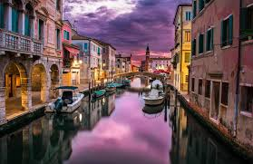
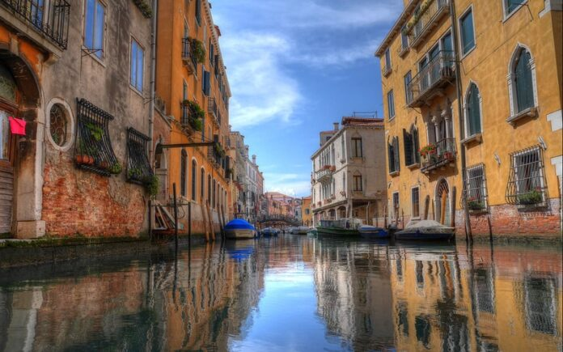
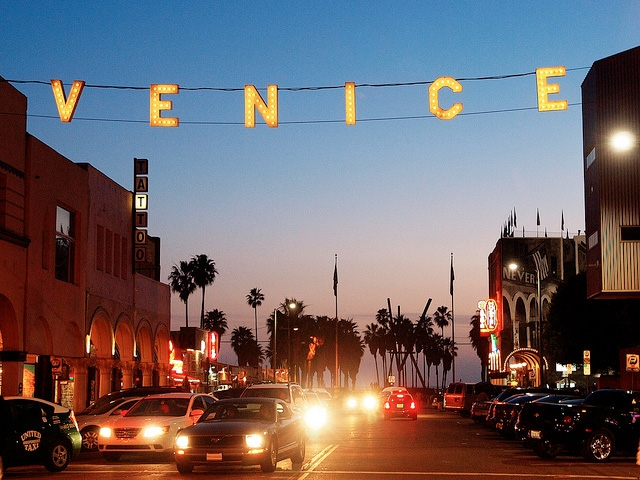
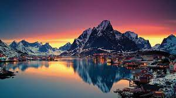

Venice, Italy

Venice is one of the most popular Italian cities for tourists, even with all the other beautiful, historic places there are in Italy. However there’s a good reason. The City of Water is celebrated because of its unusual circumstances, sitting on 100+ small islands connected by over 400 bridges.
  
If you are wondering what you can do in Italy, you can view it from the link below.
North Norway
There are extreme variations in daylight between winter and summer. At Nordkapp the midnight sun can be seen from 11 May to 31 July, and the sun does not rise above the horizon from 19 November to 22 January. For Tromsø, the dates are 17 May to 25 July, and 26 November to 15 January, respectively; and for Bodø from 30 May to 12 July (no polar night in Bodø). The mid-winter darkness is not totally dark on the mainland; there is twilight for about three hours around noon in Tromsø. Helgeland does not have true midnight sun, but the upper part of the sun disc never descends below the horizon as far south as Mosjøen in June. February is a transitional period when the sun rapidly returns, and March and April often feel like an explosion of light with long daylight hours and snow cover in most areas except the coastal strip of Nordland. The Aurora Borealis can be seen in the whole area from autumn to mid-April, after which it gets too bright to observe the Aurora.
The lights, which are also called aurora borealis, show up at night when the sky is dark. ... But even though you can't take the lights for granted – it is, after all, a natural phenomenon, just like the weather – you are still guaranteed to experience magical light in Northern Norway all through the polar night.